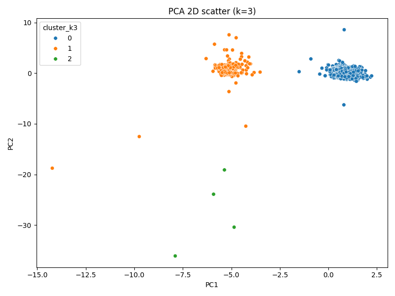
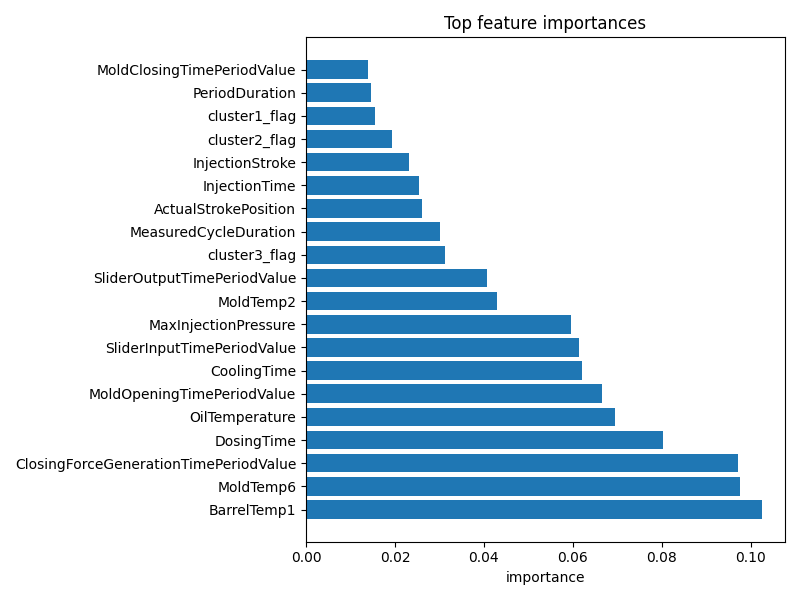

Bu doküman, enjeksiyon kalıplama kalite kontrol projesinde gerçekleştirilen LLM entegrasyonu, Taguchi tabanlı prompt optimizasyonu ve elde edilen bulguların teknik özetidir. Aşağıdaki bölümler proje verileri, deney tasarımı, metrikler ve örnek çıktı biçimlerini içerir.
Ham Veri Kaynağı: Enjeksiyon kalıplama makinesinin sensörlerinden elde edilen zaman serisi ve proses setpointleri. İlk çalışmalar MouldCode=5001 altkümesi (yaklaşık 1.4k satır) üzerinde yürütüldü.
Korunan Değişkenler (seçilen örnekler): BarrelTemp1, MoldTemp6, DosingTime, CoolingTime, MaxInjectionPressure. Bu değişkenler model tabanlı önem skorları ve literatürsel öneme göre korundu.
Temizlenen / Filtrelenen Değişkenler: Meta veriler ve düşük varyanslı sütunlar (örn. PeriodDuration, MoldClosingTimePeriodValue) analiz dışı bırakıldı. Ayrıca tekrarlı kimlik sütunları ve tamamen tekil sütunlar elendi.
outputs/parameter_stats_5001.csv dosyasında her parametre için temel istatistikler kaydedilmiştir. Bu CSV, raporun gösterge tabloları ve seçilmiş özet görselleri için kaynak olarak kullanılmıştır.Amac: Taguchi metoduyla hem proses parametreleri hem de LLM prompt bileşenleri için en iyi seviye kombinasyonlarını belirlemek (maksimum güvenilirlik / S/N).
Orthogonal Dizi: L9 (4 faktör × 3 seviye) kullanıldı.
Faktör atamaları (kısa özet):
Kullanılan model: Yerel entegrasyonla üretim HTTP erişimli büyük bir model sürümü (ör. Gemini benzeri endpoint) üzerinden test edildi.
Taguchi‑Prompt Rasyoneli: Prompt bileşenleri (context, COT, output-strictness, persona) Taguchi ile optimize edildi. Amaç parse edilebilirlik, tahmin doğruluğu ve güven skorunu maksimize etmek.
Optimal bileşenlerin kısa özeti:
Quality Expert personaRunner, outputs/taguchi_L9_matrix.csv içindeki 9 deneme kombinasyonunu aldı; her deneme için outputs/ham_veri_mould_5001_pruned_with_labels.csv içinden rastgele örnekler seçilerek model çağrıları yapıldı.
Oluşan dosyalar:
outputs/taguchi_runs/run_T1.ndjson … run_T9.ndjson (her satır: sample_id, prompt_id, raw_response, parsed, parse_ok)outputs/taguchi_runs/taguchi_results_summary.jsonoutputs/taguchi_runs/taguchi_analysis_summary.jsonHTTP 429 Too Many Requests hata yanıtları alındı. Bu durum rate limiting/retry stratejileri gerektirir.outputs/taguchi_runs/predicted_defects_summary.json içinde saklanmıştır.predicted_defects boş gelenler: 10Sık görülen tahmini kusurlar (örnek sayıları): Dimensional Variation (2), Potential Cooling Issues (1), Inconsistent Dosing (1), warpage/temperature-related (birkaç çeşit, toplam 4+)
Yorum: Model her zaman açık bir kusur belirtmiyor — yaklaşık %40–60 oranında predicted_defects alanı dolu geldi. Bu, gönderilen ölçüm anlık görüntülerinin bazı durumlarda açık bir kusur sinyali taşımamasından veya prompt'un modelden konservatif (ihtimal düşük) cevaplar almasına neden olmasından kaynaklanıyor olabilir.
Alınan aksiyonlar ve notlar:
raw_response) ve ayrıştırılmış sonucu (parsed) artık sağlam biçimde saklıyor; bu sayede ham model cevabı analiz edilebiliyor.requests paketi venv'e yüklendi ve scripts/llm_taguchi_runner.py içinde küçük bir scope hatası düzeltildi (lazy import için global llm_client eklendi).outputs/taguchi_runs/predicted_defects_summary.json (örnekler ve sayaçlar dahil) oluşturuldu.-- Tavsiye: Eğer predicted_defects alanının daha sık dolmasını istiyorsanız, prompt'ta modelden "şüpheli, düşük güvenli olası kusurları bile 1–2 maddede listele" biçiminde açık bir istek eklemeyi öneririm. Ayrıca, daha fazla bağlam (ör. setpoint tarihçesi, eşik değerler) sağlanması modelin karar verme gücünü artırır.
LLM'nin gerçek zamanlı gözetim için döndürmesi beklenen JSON şeması (özet):
sample_id: stringquality: "High" | "Medium" | "Low"confidence: 0.0 .. 1.0predicted_defects: [ { type, confidence, short_explanation } ]reasoning_steps: [string] (COT etkinse)recommended_actions: [ { action, parameter, suggested_delta, rationale, expected_risk } ]provenance: { model, model_version, prompt_id, timestamp }Örnek JSON:
{
"sample_id": "row_12345",
"quality": "Medium",
"confidence": 0.82,
"predicted_defects": [
{"type":"short_shot","confidence":0.68,"short_explanation":"yüksek viskozite"}
],
"reasoning_steps": ["Sıcaklık nominalin üzerinde","Basınç dalgalı"],
"recommended_actions": [
{"action":"increase_mold_temp","parameter":"mold_temperature","suggested_delta":"+2°C","rationale":"akışı artırır","expected_risk":"low"}
],
"provenance": {"model":"gemini-2.0-flash","prompt_id":"L9-T3-row_12345","timestamp":"2025-10-27T12:34:56Z"}
}
Below are the main visuals produced during the analysis. They are embedded for quick review; full‑resolution images and CSV sources are in the outputs/ directory.


outputs/parameter_stats_5001.csv (CSV olarak kaydedildi). Bu dosya, rapor tabloları ve ek özetler için kullanılabilir.Accuracy, Macro F1, Confidence‑weighted accuracy, Brier score, Parsability rate
Taguchi S/N uygulaması:
llm_client katmanına eklenmelidir.Not: Güvenlik & gizlilik uygulaması olarak, LLM'e gönderilen prompt'larda yalnızca sample_id (takip için), Setpoints ve Measurements gönderilir. Timestamp, MouldCode veya diğer dahili kimlik bilgileri model tarafından kullanılmaz; takip ve audit amaçlı metadatalar NDJSON sonuçlarında internal_metadata altında saklanır, fakat prompt gövdesine asla eklenmez. Bu, modelin zaman damgası üzerinden önyargılı çıkarımlar yapmasını engellemek içindir.
scripts/llm_prompts_taguchi.py, scripts/llm_taguchi_runner.py, scripts/llm_taguchi_analyze.pyoutputs/taguchi_runs/*, outputs/ham_veri_mould_5001_pruned_with_labels.csv, outputs/parameter_stats_5001.csvAşağıda, outputs/taguchi_runs/run_T1.ndjson içinden alınmış üç temsilî, ayrıştırılmış (parsed) LLM çıktısı örneği verilmiştir. Her biri runner tarafından JSON olarak parse edilmiş ve parse_ok: true olarak işaretlenmiştir. Tam NDJSON dosyaları outputs/taguchi_runs/ altında mevcuttur.
Örnek 1 (güncel):
{
"sample_id": "961150",
"quality": "Medium",
"confidence": 0.60,
"predicted_defects": [
"Potential Cooling Issues",
"Inconsistent Dosing"
],
"reasoning_steps": [],
"recommended_actions": [
"Investigate CoolingTime and optimize cooling parameters.",
"Check dosing unit for wear or malfunction.",
"Check ActualStrokePosition sensor for errors or blockage of material into sample.",
"Verify set InjectionPressure is enough to fill the sample."
],
"provenance": "Model assessment based on the supplied measurement snapshot and derived indicators."
}
Örnek 2 (güncel):
{
"sample_id": "573854",
"quality": "Medium",
"confidence": 0.58,
"predicted_defects": [
"Potential surface defects due to mold temperature variations",
"Inconsistent cooling time may affect part warpage"
],
"reasoning_steps": [],
"recommended_actions": [
"Increase cooling time to ensure adequate part solidification.",
"Evaluate the impact of slight injection pressure adjustments on part quality."
],
"provenance": "Assessment using measurement snapshot; suggests temperature/cooling-related risk."
}
Örnek 3 (güncel):
{
"sample_id": "349027",
"quality": "Medium",
"confidence": 0.62,
"predicted_defects": [
"Dimensional Variation"
],
"reasoning_steps": [],
"recommended_actions": [
"Verify and record the mold temperature setpoint.",
"Verify and record the injection pressure setpoint.",
"Optimize the cooling time to prevent warpage or sticking.",
"Consider performing a Design of Experiments (DOE) to optimize the injection molding process if dimensional variation is observed."
],
"provenance": "Model indicates dimensional risk based on measurement variances and clustering signals."
}
Not: Bu örnekler, canlı testlerimizin ayrıştırılmış (parsed) çıktılarından örneklenmiştir. `predicted_defects` alanı her zaman dolu gelmeyebilir; boş döndüğünde model, ölçüm anlık görüntüsünde açık bir kusur sinyali bulamadığını ifade eder. Ham model cevapları `raw_response` alanında saklanır; `parsed` alanı ise model yanıtından JSON bloklarını çıkartıp şemaya göre normalize edilmiş halidir.